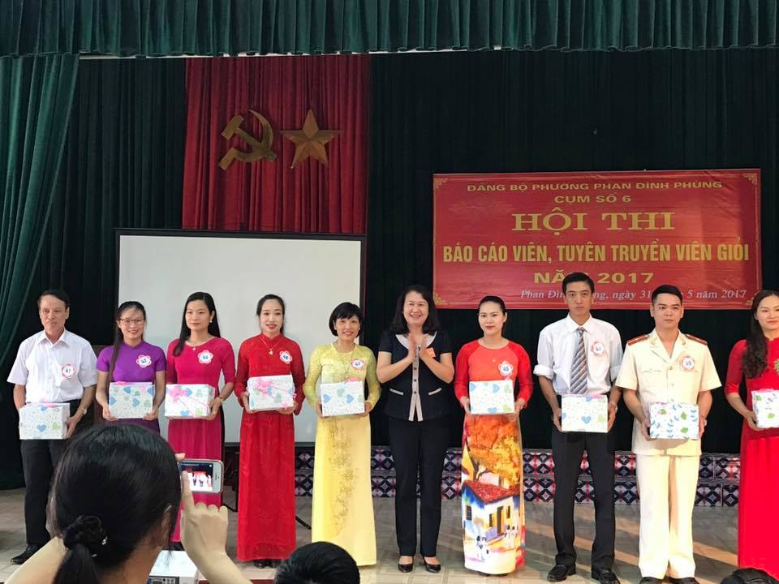
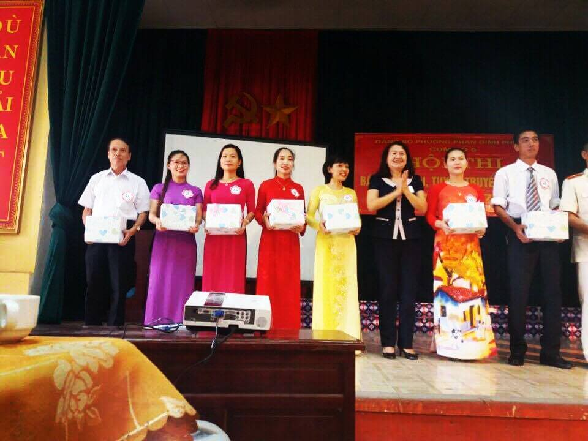
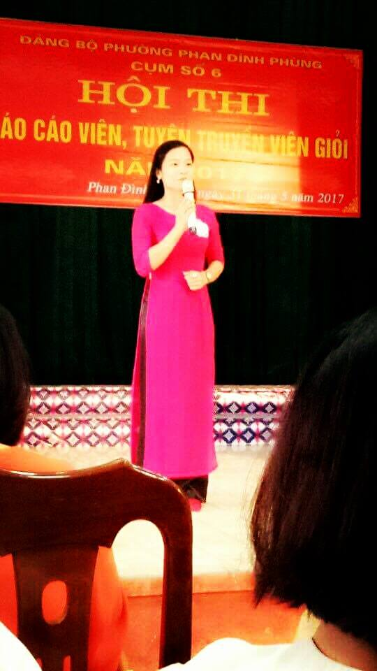
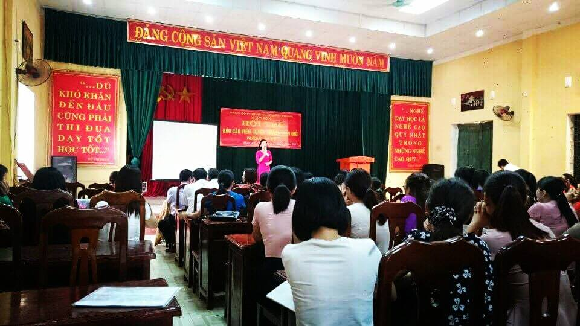

Hội thi báo cáo viên, tuyên truyền viên giỏi năm 2017.

Tại hội thi, các đồng chí báo cáo viên thực hiện 2 phần thi: thuyết trình và trả lời câu hỏi. Với tinh thần trách nhiệm, sự tâm huyết và bằng các kỹ năng, phương pháp tuyên truyền, các báo cáo viên đã truyền tải trực tiếp nhiều nội dung cơ bản đã tác động đến tâm tư và hành động vận dụng Nghị quyết vào thực tiễn đối với cán bộ, đảng viên, nhân dân. Hội thi là cơ hội để báo cáo viên giao lưu, học tập, trao đổi kinh nghiệm, nâng cao trình độ, kỹ năng tuyên truyền.
Đại diện cho chi bộ Tiểu học Nha Trang, đồng chí Hồ Thị Phương Thảo, một đảng viên trẻ của chi bộ đã gây được ấn tượng với ban giám khảo qua bài diễn thuyết với chủ đề: “Những thành tựu kinh tế - xã hội của thành phố Thái Nguyên trong 55 năm xây dựng và phát triển”.
Bài diễn thuyết đã nêu được vị trí, tầm quan trọng của thành phố Thái Nguyên ở vùng trung du miền núi Đông Bắc nói chung (vùng Việt Bắc nói riêng), Thái Nguyên là cửa ngõ giao lưu kinh tế xã hội giữa vùng trung du miền núi với vùng đồng bằng Bắc bộ. Quá trình xây dựng, phát triển và trưởng thành từ xuất phát điểm là một trung tâm thị xã bị ảnh hưởng nặng nề của chiến tranh để lại, cơ sở vật chất hầu như không có gì. Đến nay thành phố Thái Nguyên đã phát triển về mọi mặt, đời sống nhân dân không ngừng được cải thiện, an ninh- quốc phòng được giữ vững đó là tiền đề vững chắc để thành phố Thái Nguyên phát triển đô thị theo hướng hiện đại, tiếp tục thực hiện thắng lợi những mục tiêu, nhiệm vụ chính trị, kinh tế- xã hội trong những năm tiếp theo. Trong bài thuyết trình, Đ/c Hồ Thị Phương Thảo cũng đã liên hệ với ngành giáo dục thành phố nói chung, nhiệm vụ trường tiểu học Nha Trang nói riêng đồng thời cũng đề xuất những giải pháp của riêng mình góp phần xây dựng thành phố Thái Nguyên ngày càng giàu đẹp, văn minh, cùng với cả tỉnh và cả nước thực hiện thành công sự nghiệp đổi mới, công nghiệp hóa - hiện đại hóa và hội nhập quốc tế.
Một số hình ảnh của hội thi:

Các Báo cáo viên nhận quà lưu niệm của Hội thi.

Đ/c Hồ Thị Phương Thảo trong phần thi Kỹ năng xử lý tình huống

Đ/c Hồ Thị Phương Thảo trong phần thi Thuyết trình